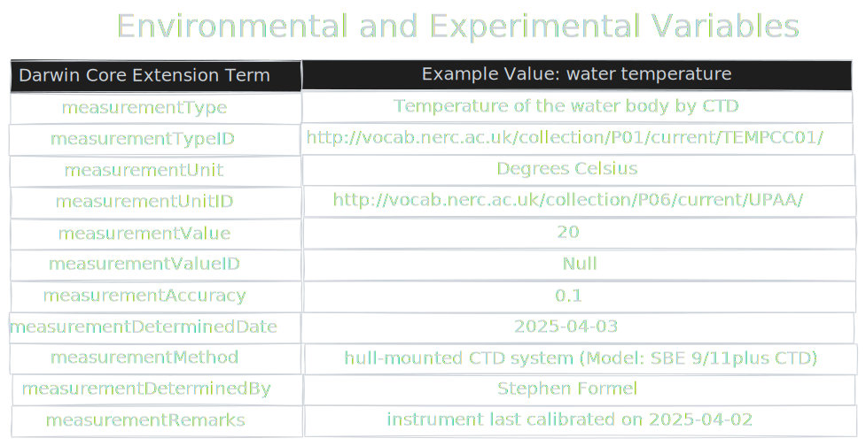

Using Darwin Core with your existing data
Consider incremental and strategic incorporation of standards.
It can pay to keep local structures aligned with standards that are useful downstream of collection.
{kind=link}
But, you may already have systems in place for collecting and working with your data. Consider improving them by selectively working toward a standards-based system. Already standards based? Consider mapping to Darwin Core and publishing a Darwin Core Archive so that the data can be found and reused by the biodiversity science community.
Examples of Aligning to Darwin Core
What does it look like to map existing data to Darwin Core? Here we share a hypothetical example of a fisheries trawl, and and another of satellite telemetry data from the ATN.
Hypothetical Fisheries Trawl Data
{kind=link}
Here we share data from a hypothetical fisheries trawl survey. In Darwin Core these data would be coordinated over a couple of tables to describe the core data (what, when, where) and the additional data, like experimental and environmental covariates that are specific to this data type and study. Here, we’ve broken these up into a few different tables to make them easier to view.
When
{kind=link}
Let’s start on the left, with ‘When’. This table demonstrate how variables names something like ‘Date’ and ‘Time’ map to the Darwin Core terms eventDate and eventTime fairly directly. With trawl data the might be captured as ‘Start’ and ‘Stop’ times, and that range can be captured within the ISO 8601 format that is used in Darwin Core.
What may not be obvious is that Darwin Core events can be structured hierarchically, so individual time points, or ranges, can exists within parent events.
Where
{kind=link}
Like the When table, there is a fairly straightforward mapping of spatial coordinates to the Darwin Core standard. For many people, they can use Decimal Degrees taken directly from a GPS system. Others may need to convert from Degrees Minutes Seconds to Decimal Degrees.
What do you do when you want to describe a transect, as is common in trawl data? Darwin Core offers the term footprintWKT, which allows description of 2-D and 3-D shapes as ’Well Known Text (WKT)’. This can include polygons, lines, circles, and other shapes.
Lastly, Darwin Core allows both mininum and maximum depth to be captured, although you may need to convert your data to meters.
What
{kind=link}
Now we finally get to the biological part of our data. A trawl might return many species. Darwin Core allows these to be described via scientificName (any level of classification, not just species) and scientificNameID (corresponding to a database ID like a WoRMS AphiaID or ITIS TSN).
individualCount can be described, or if you have a non-count units, organismQuantity and organismQuantityUnit` can be used to describe another unit that appropriately describes the catch in terms of Catch Per Unit Effort (CPUE).
Lastly, each of these descriptions would be give and eventID or occurrenceID to identify this specific observation. This is like a primary key in a SQL database.
Environmental and Experimental Variables
 How does Darwin Core capture the information that might be specific to this study that might not be common accross all of biology? It uses extensions, especially the extended Measurement Or Fact extension. In this way, any measurement or variable can be linked to any event or occurrence. Our example here shows temperature. Below we show a more unsual example from satellite telemetry.
This table reads differently than the others. In this case we have the Darwin Core terms in the left column and an example value in the right column. We name the variable in the measurementType, and use measurementTypeID to link it to a corresponding URL definition that can be read by a computer.
Similarly, we break unit into a name and ID so computers can efficiently and correctly coordinate these data with other data. If we have information on properties like accuracy, methodology, and who recorded this information, we can record that as well.
Example Satellite Telemetry Data
Walkthrough needed….
{kind=link}
There are many paths!
{kind=link}
There are many paths to the top of the mountain. See the resources page to view how others have shared their data with Darwin Core.